动态图解 Super-agent：30 张动画把双层架构讲成画面
赛博禅心这篇是 DeepSeek Harness 团队《Super-agent 设计探索》的图解版：文字按原文的顺序重新口语化，配了 30 张会动的 SVG 图，把「人只盯得住 3 到 5 个会话」「Router 派活、Worker 干活」「订阅直通」「存算分离」「Watchdog」这些机制画成过程。数字和实验结论沿用原文；文中的群聊对话、需求场景看起来是为图解编的示意（未确认）。本页按它的 11 个大节走一遍，30 张动图全部保留，最后一节对照原文列出它省掉的声明。
公众号原文 它改写的原文：DeepSeek Harness 团队长文（本站导读） 精读版（加密，全文对照） 本页导读约 22 分钟
开篇就交代了来历：这篇跟着 DeepSeek Harness 团队那篇《Super-agent 设计探索：迈向更自主的 Agent 系统》发出，想把那篇的工程实践和架构思路画成图。论点都来自原文，这篇主要贡献是动图和更口语的复述。
引子：DeepSeek 内部有个 Super-agent 一直挂在公司群和 GitHub 上，几件事同时推；有人在群里抱怨 bug，没点它的名，它照样去复现、定位，最后交了修复用的 Pull Request。
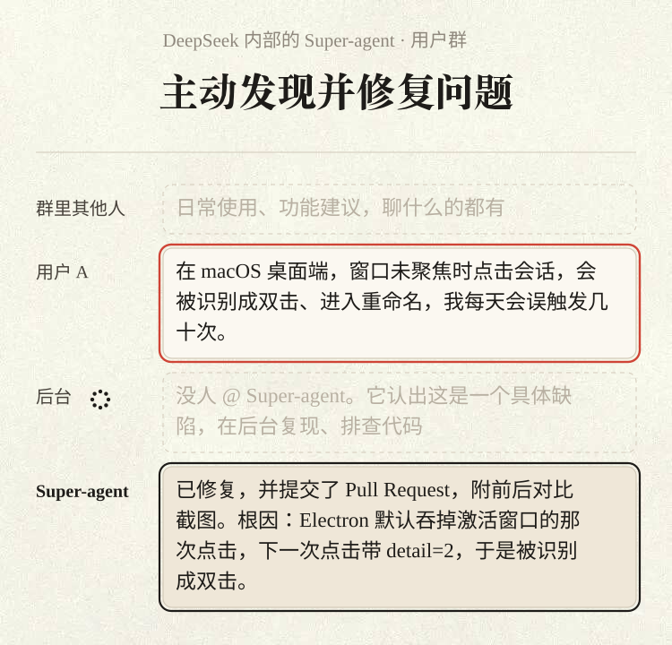
人一次只跟得住 3 到 5 个会话，所以要把 Agent 从「某一次会话」里解放出来
起点有两层。单任务 Agent（以 Coding Agent 为代表）已经能拿工具解决难题，也越来越不需要人盯；模型调度多个 Agent 的本事也在涨，跨会话去组织一批 Agent 开始可行。于是人管执行越来越少，主要做决策和验收。
个人助手（Personal Agent）因此流行起来：直接接进日常的消息，以及日程、邮件和工作平台，一边看信息流一边把事办掉。作者提醒，这种「一直在线」、来了事件就处理的工作方式不止个人能用，软件开发等商业场景同样值钱。
卡点在于主流设计撑不起多任务，也撑不到团队协作这个规模：Agent 以一个个 Session 为单位、彼此隔绝，要并行推进几件事，人只能自己切换、自己记进度。DeepSeek 的观察是，一个人通常同时只跟得住 3 到 5 个活跃 Session。
下面这张动图演示会话一多人就顾不过来：

作者的一句话版本：单任务做得多好取决于模型，能并行几件取决于人的注意力。
给现有 Agent 加上 CLI、MCP 或外部连接器，让它收外部消息，行吗？能用，但有三处硬伤：单个会话是同步阻塞的，前一件没完后一件进不来；几件事的上下文混成一锅；本地电脑断网 Agent 就停。养这样一套东西也很费人。
结论是让 Agent 不再依附于「人手动打开的某次会话」，变成一个持续存在的实体：记得跨会话的来龙去脉，能同时推好几件复杂的事，互不干扰。这种形态连同底下的系统架构，DeepSeek 叫它 Super-agent。
内部实例举例：同一个开发任务，可以在群聊里提出，到 GitHub 上接着改，换了地方它也接得上。
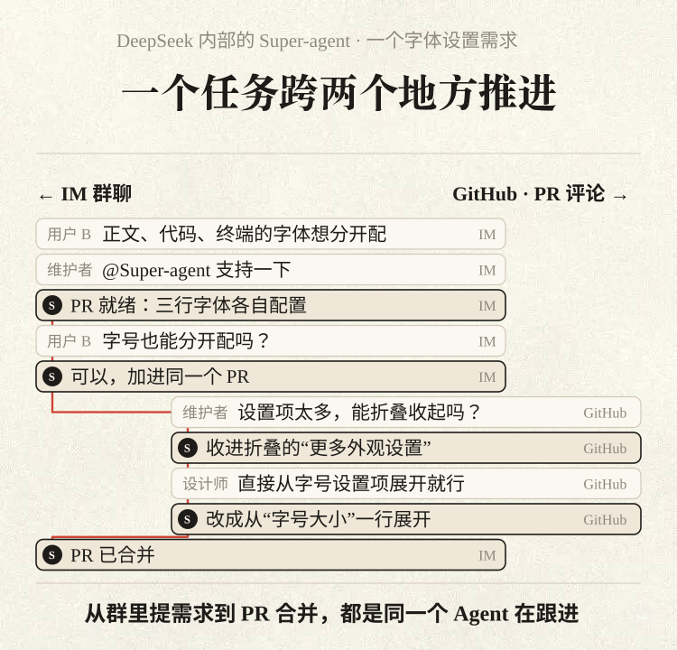
开场那个画面也是这个实例：它持续看着公共群里的反馈，即使没人 @，也会主动定位根因并提交修复。
连续、高效、主动、持久；一个 ReAct Loop 做不到，需要一套借鉴经典系统设计的架构
四个基础特征。连续：不管在群聊还是 GitHub 评论里说，都像同一个 Agent；「某个 Session 里有没有某条信息」由它操心——群里先定方案 A、PR 评论里改成 B，它会跟着改。高效：回得快，几件复杂的事能并行做好，上一条没完就能接下一条。主动：自己看环境，挑值得做的推进，没它的事就不出声。持久：始终一直在线，接入用户实际干活的环境，跑久了出异常能自愈。
四个特征各自落到场景里：

一个 ReAct Loop（模型想一步、调一次工具、看结果，然后再想下一步，如此循环）扛不下这四条，必须有配套架构。作者认为同样的约束会逼出同样的结构：个人助手和软件开发 Agent 只要目标是「一直在线」、并发响应环境里的事件，底层多半长得像；碰到的难题也跟几十年来的计算机系统课题相通，所以后文会一再出现 Fast Path、缓存、局部性、投机执行、存算分离。
实现会有各种变体，DeepSeek 给出的基本框架是五个模块：双层架构——兼顾连续和高效；事件驱动——带来主动；面向人的交互——和人往来时也连续高效；计算、状态与环境的分离——跨设备常驻；Watchdog——异常时自我恢复。
一条群聊消息从进入到得到回复，会依次穿过这五个模块：

用两层拆开「全局连续」和「并发执行」；Router 常驻、批处理扛高峰，Worker 隔离、各干各的
想让交互跨信道连续，多任务又能高效并发，就得在连续性和吞吐量之间取舍。全塞进一个 Session：上下文最完整，可 ReAct Loop 只能一步一步来，有速度上限，任务完成得慢、吞吐低，几件事的细节还会互相干扰。每条事件各开一个 Session：吞吐最高，但任务之间常有关联，缺少全局视角，结果互相脱节，几个会话分头回复用户，场面混乱。
两个极端的毛病，动图里一左一右：

DeepSeek 把「守住全局连续」和「大量并发执行」拆成上下两层：上面一层叫 Router 层，常驻，人的所有交互都进这里，由它做全局协调；下面一层叫 Worker 层，各个 Worker 的上下文互相隔开，分头执行具体任务。人只和 Router 对话，活交给 Worker。

这样上下文管理和并发都被系统在底层接管，用户几乎察觉不到 Session，打交道的始终是同一个 Super-agent。作者因此说，让用户手动管 Session 多半是 LLM API 留下的惯性：Session 应该只是系统内部的实现细节。
另一层含义：今天的 Session 既管上下文（技术），又管项目（产品）。两者拆开后，项目管理可以单独设计，「给用户怎样的交互和任务管理方式」变成独立的产品题，文末开放问题会接着谈。「双层」是逻辑分工，每层内部都能由多个 Session 组成。
Router 层：全局的序点，只管交互和分派
原文 · 一、Router 层Router 常驻，所有入口的人类交互都先到它；跨任务的信息和决策汇总在这里，它既是全局的序点（Sequence Point，事情在这里排出先后），也是协调点和记忆。为了轻快，它只和人沟通、分派任务，实际工作全部外包，连 Bash 工具都可以不给。一个中心派活给多个执行者，乍看像 Agent Team，差别在中心要管多细：
Agent Team 一般是把一个复杂任务拆开，让不同角色协作，子步骤耦合紧，Team Lead 必须懂细节、要规划子任务，还得高频协调各个成员，推理压力大；Router 只处理任务之间的关联与分派，单个任务怎么拆留给 Worker。反过来，若用提示词要求 Agent Team 里的主会话只对外沟通、把独立任务分给成员，它也算双层架构。DeepSeek 发现 Router 的工作往往比预想简单，较轻的模型通常就能兼顾速度和效果。
Router 层同样可以由多个 Session 组成，部分逻辑写普通代码就行；DeepSeek 用的是最直接的办法：核心就是一个常驻的 LLM Session。一个会话撑得住整个团队吗？作者说比想象中撑得住，靠的是批处理（Batching）——上一轮推理时到达的事件（即后文的 Trigger）先排着，下一轮合并处理，多出的开销很小。

消息平稳时，Trigger 逐条进入，单次延迟低；消息密集、开始排队时，积压的几条等下一次调用 LLM 时一起注入。划算的原因：Router 每步都是长输入、短输出，几条并进同一次 LLM API 调用，在 Prefill 阶段（读输入的阶段）并行计算，单次耗时的增长远慢于批的大小。所以在一定范围内，排队越多，每个决定分到的推理时间越少；能攒多少受两点限制：上下文长度，和模型一轮能准确处理的 Trigger 数。
原文第 7 节有定量实验（本页实验节）。加上订阅直通和链式召回，一个常驻 Router Session 对他们现在的团队规模已经够。如果规模再往上走，一个会话真的扛不住了，可以在 Router 层内部加多层过滤，或水平切分（Sharding）；这又落回连续与吞吐的取舍：切得越细并发越高，分片之间的记忆越断。全局记忆问题没解决前，这个取舍一直存在。
Worker 层：隔离执行，冲突靠共同订阅发现
原文 · 二、Worker 层Worker 是真正干活的会话：上下文彼此隔开，配齐执行工具，一次专注一件事；它直接决定结果和代码质量，所以一般用最强的模型。Worker 只给 Router 报状态，推理和工具调用不外露，由 Router 统一答复用户，这样既保住并发和交付质量，又不会几个会话各说各话。多任务时，各个 Worker 自己推进。
冲突往往出在共享现场，比如同一个 Pull Request；只要都订阅了对应的 Thread（同一个话题或同一 PR 下的一串消息，原文第 3 节细讲），便能收到相同通知，能自己发现、自己解决冲突，少数要跨任务配合的交给 Router 转达。Worker 内部同样可以多会话：复杂任务再开 Subagent，它自己就是 Agent Team 也行，这些 Router 不必知道。
在编码场景里，几件互不相关的问题复现、PR 评审、新功能开发能同时推进，谁也不卡谁。个人助手同理：界面上往往只有一个聊天页，你在里面同时聊几件事，前端这一页保证对话连贯，底下给每个话题分别派一个 Worker 并行推进、起草回复。
输入换成环境里的 Trigger；两道筛子挡掉噪音，已归属的后续消息绕开 Router
想主动，先改驱动方式：Agent 的主要输入从人在 Session 里逐条敲的提示词，换成环境里的半结构化事件——群聊消息、邮件和日程提醒、代码审查评论、CI 运行结果……Super-agent 统一叫它们 Trigger。只要监听并响应 Trigger，Agent 就能随环境变化自己动。作者照原文顺序，沿一条事件从进入到处理讲四件事：过滤噪音、路由给 Worker、上下文塞多少、能否提前行动。
过滤：程序先筛，模型再判
原文 · 一、过滤真接上群聊和代码平台后，事件流噪音高、真正该触发的少，大部分日常消息与 Agent 无关；每条都让大模型重新判断，延迟和算力吃不消。所以借 Fast Path / Slow Path：大模型推理灵活却昂贵，是慢路；把已经明确、稳定的高频判断，写进确定性代码，是又快又省的快路。事件进来先过滤，分两级：
第一级是程序（Fast Path）：凭事件从哪来、属于哪些群、发消息的人或机器人在不在白名单这些硬条件，由代码放行或拦截；比如每个来源分别配成只理会明确请求、当作候选、或者干脆不看，多数无关消息根本到不了模型。第二级是语义（Slow Path）：通过第一级的候选事件交给 LLM，按提示词里的策略结合上下文判断要不要动手；这一级也是留给人的扩展口，用自然语言改提示词，就能开关旧策略或加新策略。
一条消息要先后过这两道筛：

路由：同一个 Thread 的后续消息直通 Worker
原文 · 二、路由任务分派出去后，如果每条后续消息都得经 Router 中转，全局节点照样负担重、响应慢。所以快慢路在路由这一环也用上：Router 仅管新任务起头和跨任务协调，归属已明的后续消息由程序直接送给对应的 Worker。这要靠 Thread：同一个 GitHub Pull Request 下、同一个群聊话题下、同一串往来邮件中的连续消息，被看作一条事件流，名字叫 Thread。
Router 依据某条 Thread 的首条事件开出 Worker 后，这个 Worker 就订阅该 Thread，路由随即分两路。已订阅（Fast Path）：之后同一 Thread 的事件由程序直接交给订阅者；若新事件超出任务范围，Worker 可退订，或交还 Router 重新分派。未订阅（Slow Path）：Router 依旧能看到全部事件、掌握全局，但只对还没人订阅的新事件做判断和分派。

订阅关系是多对多：一个 Worker 可同时订好几条相关 Thread，反过来一条 Thread 也可以有多个订阅者。几个 Worker 在同一场讨论里碰上时，该 Thread 上的新事件会同时推给每个订阅者，彼此都知道对方动了什么，冲突自己就能解掉。
输出方向不变：Worker 把要点交给 Router，由 Router 统一答复用户、更新全局记忆。
Inline & Spill 管窗口、链式召回找旧事；投机执行在后台先做，有用才交
事件过滤完，又路由到了目标 Session，接着要定的是往上下文窗口里放多少。输入从有限的提示词变成环境里源源不断的半结构化事件，工具调用和事件注入怎么设计就很关键：放多了，挤占窗口，也会稀释模型的注意力；放少了模型得一遍遍调工具读，步数增加。作者引了原文那句：窗口浪费掉，等于把模型的智能浪费掉。
DeepSeek 把有限的窗口当 Cache 来管理，借用编译优化和系统领域的说法，把注入分成两种操作。Inline（内联）：近期很可能要用的信息直接放进窗口，省掉一来一回的工具调用。Spill（溢出）：超出预算或不常用的完整内容放在窗口外，窗口内仅保留引用或摘要，用到时模型自己去取。
再加上局部性（Locality）原则，可以逐步调优。从最少的信息开始：起初只给当前对象的 ID 和摘要。按局部性逐步 Inline 关联信息：先挂上强关联对象的 ID，再附时间、位置上挨着的内容，比如开头 50 个字、群聊里前后几条和它回复的那条、代码评论所在讨论里的邻近评论。超出上限就 Spill：给长内容一个不大的长度上限，多余部分放窗口外，最省事的是截断再留个「续读」入口。

这套规则顺便缓解了 Router 的老问题：后续消息大多直通 Worker、历史任务越积越多，Router 不可能装下所有任务的全部经过；可用户换个信道提起旧事，它又得想起来。对系统里每一类对象都套用 Inline & Spill，便得到一种按需逐层展开的多跳检索，名为链式召回（Chain of Recall）。
具体是：Trigger、Thread、Worker Session 等对象各有唯一 ID，注入时附上强关联对象的 ID，底层连成一张引用图；每次调工具取回的对象也照 Inline & Spill 处理，结果里又带着下一跳的摘要和 ID，模型可以从眼前这条事件出发，沿着引用逐跳取回需要的上下文。

举例就是图中的路线：当前消息 → 所在 Thread → Thread 里挂着的 Worker Session → 该 Worker 关联的另一条代码评审 Thread。作者说，Router 长期运行中「记不起前事」的问题，靠这条链好了不少。
提前行动：投机执行，有用才交付
原文 · 四、提前行动这里借的是投机执行（Speculative Execution）这个概念：结果能否用上还不确定，Agent 就先依据环境信号在后台动手；多花一点后台算力，换人少等一会儿，也少插一次手，有用就交，没用就丢。个人助手的例子：收到会议邀约或待办时，先在后台查日程有无冲突、搜集相关背景，再备好回复草稿，你看一眼确认就能发。
研发协作的例子：DeepSeek 在 DeepSeek Harness 内部用户群设了一条策略，叫「静默复现并修复」——群里有人反馈问题或讨论改动时，Agent 先在后台复现、找修复方案；只有问题确认、也有简单修法时才把结果交给用户，否则一直不出声。
等工具时也能接话；群里短、PR 里全
双层架构从上下文层面保证了跨信道连续；要在实际交互里同时做到连续和高效，还得分别解决交互方式和交互渠道两个问题。
全双工：start() / stop() 让对话不被工具卡住
原文 · 一、全双工传统 ReAct Loop 里，模型一调同步的 run()，循环就停下，直到工具跑完、返回最终结果，期间会话收不进任何新消息。消除这段阻塞的办法，是把一问一答的半双工改成全双工，让等待工具时也能继续对话。

做法：把耗时命令和子任务调用换成异步的两个调用 start() 与 stop()，形成异步版 ReAct Loop。start() 一调用马上返回 Started（已启动），循环继续；后台跑完，最终结果作为新的事件消息投回会话；模型还可以按情况调 stop()，结束跑太久的后台命令。前台对话与后台任务就此解耦，新消息在当前推理步结束后即可处理。作者转述：这套异步机制 DeepSeek Harness 已实现，但还没默认开启。
多信道：群里短，PR 里全
原文 · 二、多信道各个工作信道信息密度和习惯不一，输出得跟着调。把面向单人终端的交互照搬进群聊，冗长的推理过程和成串的工具调用会让多人群聊迅速过载。双层架构先解决了一半：推理和工具调用都关在 Worker 里，对外只由 Router 发声；在此基础上再接入用户常用的工作环境，用提示词给每个信道定规矩。
群聊等即时通讯信道：少打扰、说短话，像同事那样只在要你拍板或验收时通知，只问直接的问题、只给简短结论；原文提到一条他们试过、好用的硬性约束：一次回复不超过 100 词。GitHub、邮件、文档这类异步信道：产出要条理分明、信息足，比如开 PR 或更新 PR，就按项目规范交代背景、讲清改了什么、附上验证；放在个人助手里，就是直接写好有结构的邮件和文档摘要。
同一个结果，两种信道的写法：

计算上云、状态进库、环境留在原地；外部 Watchdog 盯住跑偏和打转
今天的本地 Agent 默认把三样东西放在同一台机器上：推进 Agent Loop 的计算、需要持久保存的会话状态、代码仓库与本地工具链这些执行环境。机器一休眠，三样全停：
设备一休眠或一离线，Agent 就停，别的设备上的环境也碰不到。要它常驻，还能灵活接进形形色色的真实工作环境，于是 DeepSeek 用了存算分离这个老办法（Compute-Storage Separation），分两步。先拆计算和状态：跑 Loop 本身不需要记东西，真正要留下来的是会话状态；那就让计算住进云上无状态的弹性容器，Session 之类的状态进数据库——容器可以水平扩展，可以随时重启或替换，连续性由持久存储兜底，Agent 不再跟某一台机器同生共死。
第二步拆开计算与执行环境。Loop 和状态都在云上之后，怎么接触任务需要的环境？模型需要的上下文大多靠工具去拿：从代码仓库里、本地文件里、依赖服务里取，所以广义上执行环境也是上下文。常见两条路都不理想：云端起沙箱、拉代码、设法重建并同步环境，可真实环境里常有未提交的本地修改、私有的凭据、内网的依赖和特定硬件或工具链，同步代价大还会漏；或者要用户舍弃本地、整个搬上云，迁移成本对很多人太高。
既然难复制——难同步的是环境本身——那就不复制：Loop 跑在云端，端侧只装一个轻量 daemon（会话状态都在云上），它只执行命令、返回结果，Agent 需要什么上下文就按需去读。

作者转述原文的对照：Anthropic 那套把大脑和双手拆开（decouple brain and hands）的做法，思路一致——harness 不存状态，会话日志外置，通过统一接口按需连到执行环境。不同在于对象：Anthropic 面向托管服务，连的多是按需创建的计算环境，以及客户 VPC 中的资源；而 DeepSeek 首先要连的，是用户日常在用的个人电脑，它时而在线时而离线，上面有没提交的改动和本地凭据。所以它也支持接云端托管的机器和按需环境，同时支持 BYOM，即用户自带机器；同一个 Agent 能在几台设备之间来回，依任务需要挑一个环境去跑命令，并从那里取上下文；哪台个人电脑重新连上，云端的 Agent 就被唤起，把留给那台机器的活补完。
出了事谁来管：外部的 Watchdog
原文 · 出了事，谁来管常驻在线还要求系统能在长期运行中自行从异常恢复。长期在线的分布式系统很难只凭内部逻辑保持可靠，要在主系统之外加一个独立的控制回路（Control Loop）。Agent 的异常又常出在模型上：进程好好的，模型却陷入无效循环或偏离目标，存活探测和监控脚本都看不出来；所以既要看基础设施，也要看任务有没有真进展。DeepSeek 的办法是在主系统之外另设一个独立的 Watchdog Session，由定时消息驱动，充当外部 Control Loop。

Watchdog 一手管基础设施故障，像接口报错、状态恢复失败，一手由模型判断每个 Worker 是否有实质进展、方向是否偏离整体目标，异常就介入修复，遇到外部偶发故障就反复复查到恢复。它自己也是一个配了全套工具的 Agent Session，维护者能用自然语言问它出错原因，也能让它在线改主系统，例如增删提示词，或者调整触发规则。
合成负载上的初步结果；直通主要给 Router 省开销，Router 越忙每个决定越便宜
想知道调度与路由设计效果如何，DeepSeek 跑了两组初步实验：其一是端到端，比较双层架构、订阅直通与单 Session；另一组单测 Router 的批处理。作者照原文先声明：负载是合成的、环境做了简化，一些设置本可更严谨，结果仅作初步参考。
消融实验：20 个活，谁先做完
原文 · 一、消融实验输入是群聊加 GitHub CI 的混合消息流，四种方案都喂同样的流。每轮实验喂约 300 条消息，当中工作请求约 20 条，剩下的是闲聊，以及跟进、叫停和 CI 通知。真正写代码的步骤换成一个只会耗时间的假工具，考的是调度与协作，不考编码本事；每种方案跑 5 次。四种方案依次是：完整的 Super-agent；拿掉直通后的 Super-agent；单 Session 配 Subagent 工具、提示中性（英文原提示，大意是合适时用 subagent）；单 Session 配 Subagent 工具、提示要求优先委派（英文原提示，大意是每条消息都会打断你，尽量让每件活各有一个 subagent，自己只做小事）。
下图看谁先做完这 20 个活：
图下的说明：曲线取 5 次运行的平均；消息间隔和工作时长都缩到 1/4，模型调用耗时用真实值；任务完成时间从发出工作请求算到结果消息返回。
| 方案 | 完成时间 P50 / P95（分钟） | 单次实验读缓存 token（全部 Session） |
|---|---|---|
| Super-agent | 12.4 / 15.7 | 2323 万 |
| Super-agent，去掉直通 | 12.6 / 15.5 | 3177 万 |
| 单 Session + Subagent，中性提示 | 20.4 / 29.5 | 605 万 |
| 单 Session + Subagent，提示优先委派 | 13.8 / 29.0 | 1082 万 |
原表 1 的四行：Super-agent 为 12.4 / 15.7 分钟、读缓存 2323 万 token；去掉直通为 12.6 / 15.5 分钟、3177 万；单 Session 中性提示为 20.4 / 29.5 分钟、605 万；单 Session 优先委派为 13.8 / 29.0 分钟、1082 万。完成时间上，Super-agent 的 P50 为 12.4 分钟、P95 为 15.7 分钟，明显好于带 Subagent 工具的单 Session。单 Session 很看提示词，主会话常常自己上手：中性提示时，5 次运行里一次 Subagent 也没调，全在主 Session 里做、不停被打断，P95 达 29.5 分钟；改成优先委派，5 次里有 4 次委派了，快了一些但整体仍慢于 Super-agent，剩下 1 次它认为活「很小」就自己做了，即图中紫色长尾。
作者的结论：单 Session 是否分工，取决于提示词写法和模型当下怎么想；双层架构则由系统保证分工——Router 自己不干具体活，Worker 只接它订阅了的 Thread。代价是 token：多个会话并行，一次实验的读缓存 token 高于单 Session，用 token 换更短也更稳的完成时间。
去掉直通：完成时间与完整版差不多，可 Router 需要做的决定约多 30%，读缓存 token 总量由 2323 万升至 3177 万，约多 37%：

所以在这组负载下，直通的价值是替 Router Session 省下可观的 token 和推理，而不是让任务更快完成。
Router 批处理：越忙，每个决定越便宜
原文 · 二、Router 的批处理为了检验「一个常驻 Router 够用」，单独压测 Router：Router 用真实模型、Worker 换成 Mock 模型，把要求决策的 Trigger 到达率从每分钟约 1 条加到约 40 条，看平均一批几条、单次请求要多久，以及每个决定分摊多少推理时间。
结果：到达率由每分钟约 1 条升到约 40 条时，平均每批由 1.0 条变成 2.8 条，单次请求只从 2.5 秒到 3.9 秒，每个决定分摊的推理时间从 6.4 秒降到 1.6 秒。事件突然扎堆时，Router 靠自动合并积压事件提高有效吞吐；这也说明消融实验里去掉直通、Router 峰值负载上升，单个 Router 仍然撑得住，在他们现在的团队规模下一个就够，全局上下文也能连续。
扩展、没有 Session 后的协作、组织级上下文边界与 A2A、安全隐私
作者转述原文的自我限定：系统能保持较低复杂度，很大程度是现阶段做了工程和场景上的简化；超出这些简化，还剩四类问题。
双层架构怎么扩展
原文 · 一、双层架构怎么扩展「一个常驻 Router Session、订阅直通、Worker 互不直接通信」这套组合，以很小的工程代价覆盖了他们眼下绝大多数日常任务；可规模和耦合上去、一个 Router 装不下时，层内结构还没定论——Router 什么时候水平切分、切多细，同层 Worker 什么时候要直接通信、用何种协作拓扑，都要在更多场景里验证。
值得探索的还有系统和模型一起设计（Co-design）：针对 Router 的几样活——判别事件、批量分派、召回上下文——专门训练模型，可能把它的吞吐和决策再提一截。再就是记忆：常驻 Router 加引用图上的链式召回，主要解决近期任务和会话的回查；运行周期拉长到跨月甚至更久，长程记忆就成为扩展的主要瓶颈。
没了 Session，人怎么协作
原文 · 二、没了 Session，人怎么和 Agent 协作双层架构把多会话管理藏进底层，Session 退到产品幕后；执行会话和界面会话分开后，任务怎么呈现给用户、交互和项目管理怎么做才自然，成了新课题。DeepSeek 认为以聊天窗口为中心有一定路径依赖，交互可以更多放进领域专属的界面，比如让它直接到 GitHub 的 Issue、Pull Request 页面里干活；界面上也可以留着会话照顾习惯，只不过眼前这一个会话，背后未必只是一个 Session。
上面谈的交互集中在两头：人发起任务、人验收结果。可模型还在快速换代，眼下不少任务仍要人在半路介入、接管或一起实时干，也就是让你在后台执行过程中随时插手；既能一步步抠细节、又不拖慢后台自己往前推，这个平衡还没找到。项目管理和交互方式与具体工作领域、个人风格关系很大，最终很可能高度定制化；作者转述原文说 DeepSeek Harness 架构开放，更好支持这种定制。
上下文边界和 A2A
原文 · 三、上下文边界和 A2A前面谈的都是单个实例内部，默认它服务范围内的信息汇成一份全局上下文。可一旦使用范围从个人扩到更大的组织，决定怎么给大家配 Super-agent，实际是在划上下文共享与隔离的边界：要共享的共用一个实例，要隔离的各自一个。

组织内部、组织之间只要有了几个彼此隔离的实例——例如每人一个助手，团队再共用一个——它们越过边界的协作就属于 A2A，即 Agent 与 Agent 的通信（不指哪个具体协议）；上下文在底层各自隔开、每个实例代表一块不同的权限边界，这样的前提下要做到安全，还要让 A2A 通信和协作可靠，还得继续摸索。
安全与隐私
原文 · 四、安全与隐私能被更多环境唤起，也就意味着要吃进更多来路不明的输入；安全和隐私没做好，这个 Super-agent 就只能在很小的、很可信的范围里工作。前面「云上跑 Loop、端上放轻量 daemon」的方案，前提是云和端彼此信任；然而云端持续收外部事件，端侧放着私有代码，还有敏感数据与本地凭据，一旦云端被攻破（服务端入侵或提示词注入），所有连着它的端侧设备都可能被接管。

就算云端安然无恙，端侧凭据只要会被放进模型上下文，日常运行时也可能漏出去；因此得另想机制，让 Agent 能用上凭据，却始终看不到凭据的内容。要让这套架构用到更大的范围，在各类环境里取上下文的本事之外，安全隐私这一关必须过。
人上移到决策和验收；原型声明在这篇里只剩半句
收尾转述原文：DeepSeek 是把计算机系统里的经典工程思想用到 Agent 系统上，实现会随技术变，思路更有长期参考价值；按这套思路、基于 DeepSeek Harness 搭起的内部 Super-agent 如今持续运转，日常参与问题复现和修复、回应代码审查，DeepSeek Harness 本身的迭代它也有份。
单件任务需要人管的地方越来越少，卡脖子的变成人的注意力；双层架构、事件驱动、异步多信道交互、存算分离和外部 Watchdog 这几样，把管会话、同步上下文的苦活收进系统，人便能上移一层，只管拍板和验收。Agent 也从等指令的对话窗口，变成数字环境里常驻、自己推进的协作者：对个人是跨设备的事务助手，对团队是长在研发流程里、会接活推进的成员。
文末：文中一部分设计已经落在插件 dsh-superagent-prototype 中，是为验证技术路线做的原型；PS 里写明：系统实现与全文写作出自 Yujia Qiao，DeepSeek Harness 团队另有十多位同事参与审阅。
补充：对照原文（本站已做导读，见页首链接）：原文开头的声明「本文是面向工程实践的架构思路探讨，并非对 DeepSeek Harness 现有产品功能的介绍」，这篇只在第二句保留了「架构思路探讨」几个字；原文结尾「并非 DeepSeek 的正式产品」这半句也没写，只说是「验证技术路线的原型」。读这篇时别把整套设计当成已上线功能；仓库 README 也说它和内部版本、文中实现都有出入。
补充：对照原文：PS 里的「系统实现和全文写作是 Yujia Qiao」指的是原文（DeepSeek Harness 那篇）的作者，不是这篇图解的作者；这篇的署名是公众号「赛博禅心」、作者字段「金色传说大聪明」。图解与原文的数字（3 到 5、12.4 / 15.7、29.5、约 30% / 37%、6.4→1.6 秒等）我逐个对过，一致。
补充：未确认：30 张动图里的群聊对话、字体设置需求、波浪号删除线 bug、各个人名和编号，是作者为图解编的示意，还是取自 DeepSeek 内部真实记录，文中没有说明，我也无法核实。